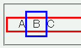
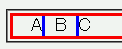

高さが指定された要素内にあるインライン要素にパディングやボーダーが指定されているとき、パディングやボーダーの親要素をはみ出している部分が消えてしまう。
<div class="example"> <p style="height:20px; border:3px solid red; font-size:18px;"> A<span style="padding:10px; border:3px solid blue;">B</span>C </p>
ABC
span要素の上ボーダーから下ボーダーまでの高さは親要素の高さを超えています。
Moz1.0での表示（標準モード）
WinIE6.0での表示（標準モード）
上下部が消えるインライン要素に position: relative; を加えて指定すればこのバグを回避できます。
<p style="height:20px; border:3px solid red; font-size:18px;"> A<span style="padding:10px; border:3px solid blue; position:relative;">B</span>C </p>
ABC
WinIE6.0では標準・互換モードともに不具合の発生が確認されました。